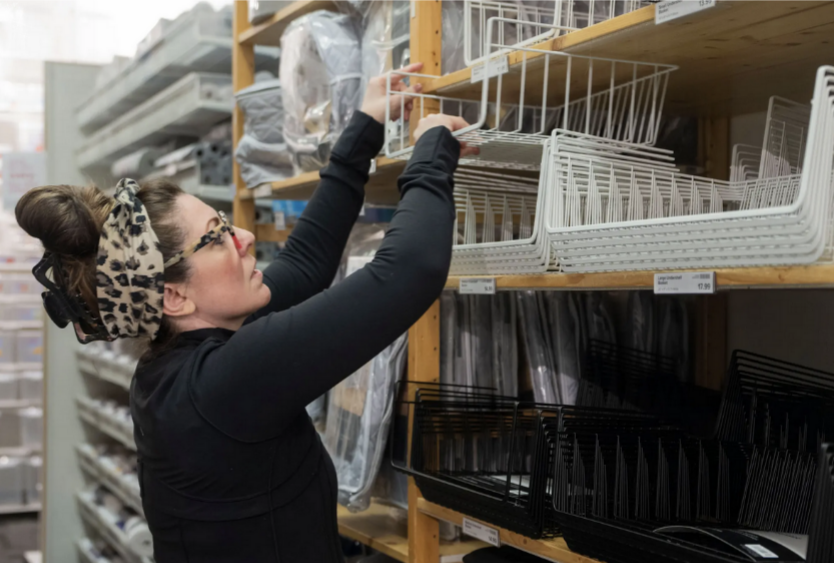

The New Year has come and gone and with it your resolutions for doing a deep, cleansing purge. What has stayed, however, is the clutter. Piles of clothing, boxes of books, bags of crafts and cords.
The start of spring offers a new opportunity to clean, well, everything, including your emotional and physical connection to your stuff.